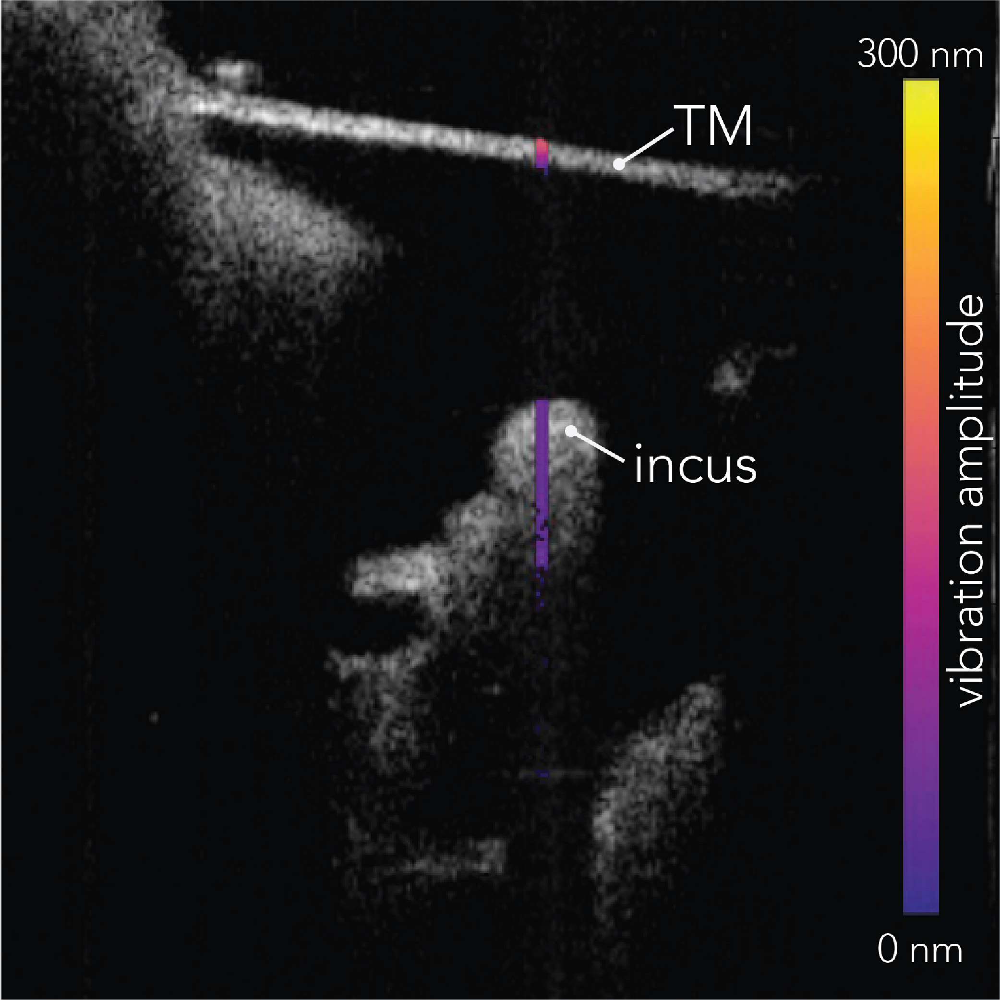

One of the key benefits of ME-OCT is its ability to produce high-resolution structural imaging of the middle ear space at the point of care without disrupting the tympanic membrane (TM) and exposing patients to radiation.
Because of that,
ME-OCT has been applied to various clinical applications in otology such as detecting cholesteatomas,
assisting in ear surgery, measuring TM thickness,
and evaluating otitis media.
Recently, our lab has expanded the capabilities of ME-OCT beyond its qualitative use in assessing the presence and relative positions of middle ear structures.
We have demonstrated that ME-OCT can also serve as a quantitative tool,
providing high geometric fidelity images of the middle ear space.
This opens up a myriad of diagnostic opportunities for clinicians from many metrology-based applications such as prosthesis sizing,
monitoring anatomical changes in healing or in progressive disease,
assessing congenital malformations of the middle ear,
measurement of TM perforations and quantifying the degree of prosthesis migration.
Furthermore,
in clinical settings,
there is a significant need for real-time visualisation of the middle ear space to observe and capture diagnostically important dynamic changes.
Addressing this, our lab developed a novel spiral scanning pattern that leverages the fast sweep rate of the akinetic laser in our ME-OCT system.
Employing this spiral scanning approach allows for a real-time,
distortion-free 4D imaging (three-dimensional imaging over time) of the middle ear space,
covering a \( 10.9 \, \text{mm} \times 30^\circ \times 30^\circ \) field of view (FOV).
This continuous imaging can capture dynamic middle ear processes such as muscle contractions,
conformational changes due to pressurisation, and the insertion of surgical instruments,
enhancing clinical understanding and diagnostic accuracy of middle ear conditions.
2D imaging
3D imaging
4D imaging (Valsaval)
Doppler vibrometry
Vibrometric response of the ossicles to sound
In addition to structural imaging,
OCT can also evaluate middle ear status by detecting micro-movements of the TM,
ossicles, and foreign objects (e.g., prostheses or retained surgical items) when present,
in response to pure tone sound stimuli with Doppler vibrometry.
In particular,
OCT-DV can distinguish otosclerotic ears from normal ears in vivo through an intact TM,
achieving 100% sensitivity and 98% specificity respectively,
based on measurements obtained at the lenticular process of the incus with a 500 Hz stimulation frequency.

During ME-OCT measurements,
an acoustic stimulus with a much lower frequency than the laser sweep is generated,
causing periodic motion of the structure of interest and introducing a Doppler shift in the measurements.
This Doppler shift appears as an optical phase shift,
modulated at the acoustic stimulus's frequency,
between A-lines acquired sequentially in time as illustrated above.
The resulting optical phase shift represents a frequency-resolved vibration signature that can be extracted by first calculating the phase difference of sequential A-lines and then taking the Fourier transform (FT) across those phase differences at each depth.
This approach allows for obtaining velocity information directly with high accuracy and avoids motion noise during acquisition.

.jpg)
.jpg)
.gif)